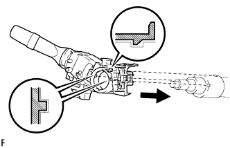
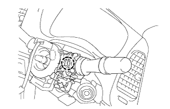

CÔNG TẮC CHẾ ĐỘ ĐÈN PHA > LẮP |
| 1. LẮP CỤM CÔNG TẮC CHẾ ĐÈN PHA |
|  |
Lắp công tắc chế độ đèn pha bằng vấu như trong hình Vẽ.
 |
Lắp công tắc sáng tối đèn pha bằng kẹp.
 |
Lắp giắc nối.
| 2. LẮP CỤM CÔNG TẮC GẠT NƯỚC VÀ RỬA KÍNH |
|  |
Gắn khóa cài để lắp công tắc gạt nước.
Nối các giắc nối.
| 3. LẮP CÁP XOẮN |
Kiểm tra rằng các bánh xe trước hướng thẳng.
Đặt công tắc xinhan đến vị trí trung gian.
Lắp cáp xoắn.
Nối giắc nối vào cáp xoắn.
| 4. LẮP NẮP CHE PHÍA TRÊN TRỤC LÁI |
 |
Lắp nắp che phía dưới bằng 3 vít.
| 5. LẮP NẮP CHE PHÍA DƯỚI TRỤC LÁI |
|
Lắp nắp che phía dưới bằng 3 vít.
| 6. LẮP CỤM VÔ LĂNG |
 |
Gióng thẳng các dấu ghi nhớ trên vô lăng và trục lái chính.
Lắp đai ốc bắt vô lăng.
| 7. ĐẶT CÁC BÁNH TRƯỚC HƯỚNG THẲNG VỀ PHÍA TRƯỚC |
| 8. KIỂM TRA ĐIỂM GIỮA CỦA VÔ LĂNG |
| 9. LẮP CÔNG TẮC MẶT VÔ LĂNG |
 |
Đỡ mặt vôlăng bằng một tay như trong hình vẽ.
Nối giắc túi khí.
Nối giắc nối còi.
Lắp mặt vôlăng sau khi xác nhận rằng rãnh trên chu vi của vít mắc vào vỏ vít.
Dùng chìa hoa khế T30, lắp 2 vít.
| 10. NỐI CÁP ÂM ẮC QUY |
| 11. KIỂM TRA CỤM MẶT VÔ LĂNG |
Kiểm tra các vết cắt, nứt hay biến màu trên bề mặt bên ngoài của mặt vôlăng và trong phần rãnh.
Kiểm tra rằng còi kêu.
| 12. TIẾN HÀNH THIẾT LẬP BAN ĐẦU |
Tiến hành thiết lập ban đầu (Xem trang Kích chuột vào đây).
| 13. KIỂM TRA ĐÈN CẢNH BÁO SRS |
Kiểm tra đèn cảnh báo SRS (Xem trang Kích chuột vào đây).